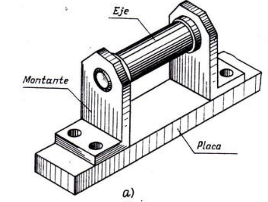
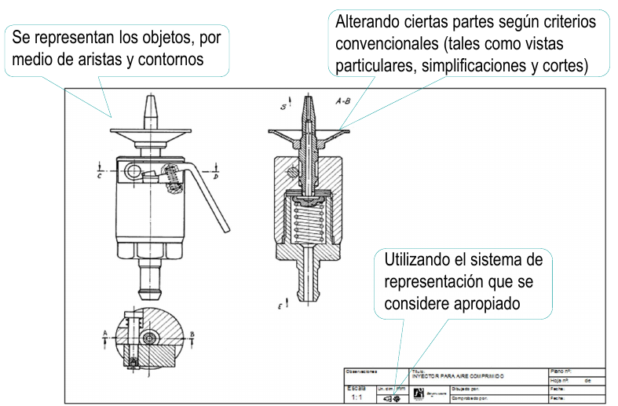
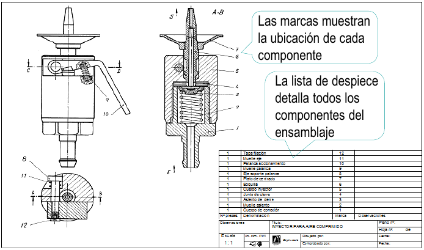
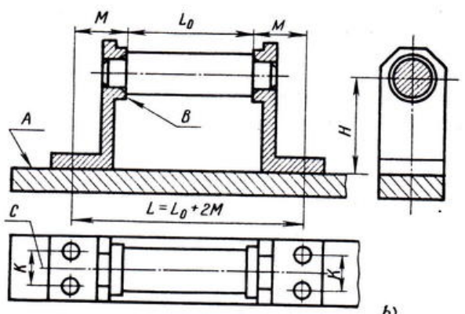
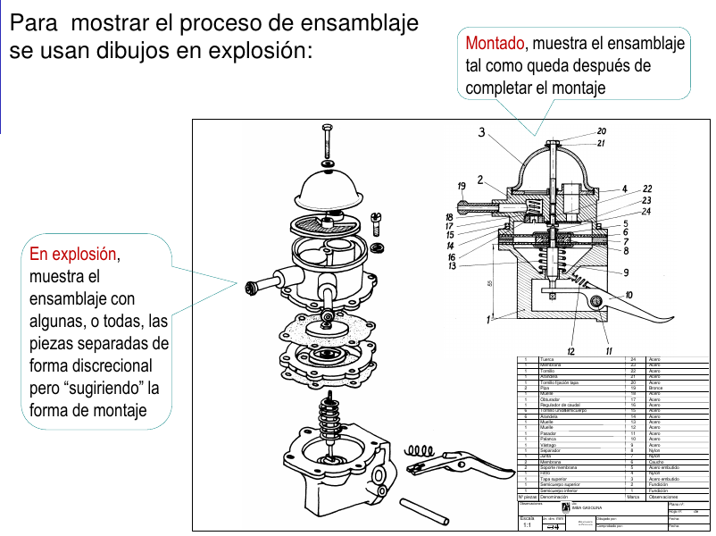
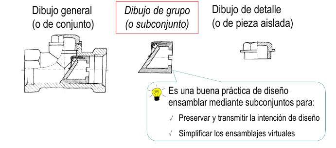
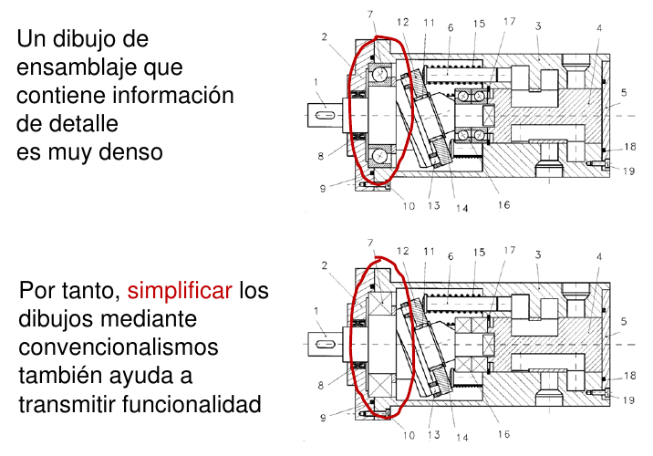
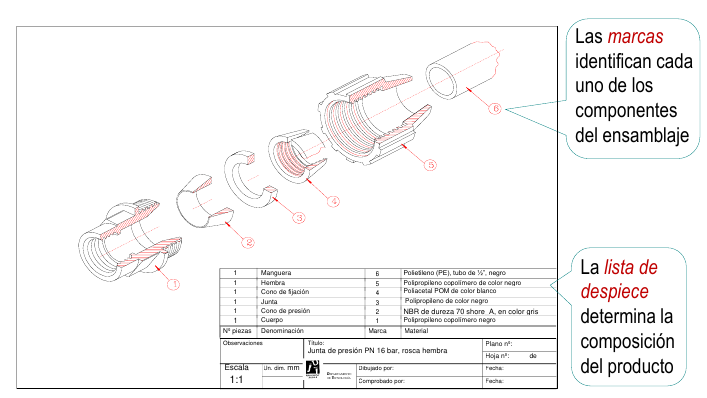

<style> .reveal section img { background:none; border:none; box-shadow:none; } #left { margin: 10px 0 15px 20px; text-align: center; float: left; z-index:-10; width:48%; font-size: 0.85em; line-height: 1.5; } #right { margin: 10px 0 15px 0; float: right; text-align: center; z-index:-10; width:48%; font-size: 0.85em; line-height: 1.5; } </style> [//]: # (Ejemplo de columnas izquierda y derecha) [//]: # () [//]: # (<div id="left">) [//]: # () [//]: # (<font size=5>) [//]: # () [//]: # (<p style='text-align: justify;'>) [//]: # () [//]: # (</p>) [//]: # (</font>) [//]: # () [//]: # (</div>) [//]: # () [//]: # (<div id="right">) [//]: # () [//]: # () [//]: # (</div>) # Dibujos de ensamble <span style="font-size: 20.0pt; "> **Profesor:** Ing. Israel Chaves Arbaiza </span> <span style="font-size: 20.0pt;"> **Curso**: Dibujo II </span> <img align="left" width="350" height="200" src="media/logo-ucr.png"> <img align="right" width="350" height="80" src="media/logoEIM.png"> --- ## Introducción <span style="font-size: 20.0pt; "> <div id="left"> <font size=5,8> <p style='text-align: justify;'> * Los dibujos de conjunto o ensamblaje sirven para mostrar productos que tienen más de una pieza * Pueden mostrar diferentes tipos de información: * Qué componentes tiene * Cómo funciona * Cómo se ensambla y desensambla * Para que los dibujos de ensamblaje sean eficaces transmitiendo información, es importante conocer: * Las normas o principios de representación de dibujo de conjuntos * Los contenidos de los dibujo de conjuntos </p> </font> </div> <div id="right">  </div> </span> --- ## Introducción <span style="font-size: 20.0pt; "> En los dibujos de ensamblaje se usan las mismas normas generales de representación que en los dibujos de piezas aisladas <div style="text-align: center;">  </div> </span> --- ## Introducción <span style="font-size: 20.0pt; "> Pero, para transmitir información sobre los componentes del ensamblaje y la forma en la que se relacionan... se añaden nuevos contenidos: * marcas (globos) de numeración * listas de despiece (lista de partes) * no olvidar las vistas de corte y de detalle <div style="text-align: center;">  </div> </span> --- ## Normas de representación <span style="font-size: 20.0pt; "> <div id="left"> La mayoría de las convenciones generales de los dibujos de ingeniería pueden aplicarse también a los dibujos de ensamblaje. Pero los dibujos de ensamblaje tienen ciertas convenciones propias, no compartidas con los dibujos de pieza aislada: * Utilizar rayados diferentes para piezas distintas * Compartir contornos de piezas adyacentes * Cortar solo aquellas piezas que interese * Simplificar los dibujos mezclando representaciones convencionales y simbólicas </div> <div id="right">  </div> </span> --- ## Contenidos <span style="font-size: 20.0pt; "> El contenido de los dibujos de ensamblaje debe adaptarse a su función, de la siguiente manera: * Ilustrar el **montaje** -> Se utilizan dibujos en **explosión** * Mostrar su **funcionalidad** -> Usamos dibujos de **subconjunto** * Presentar las **partes** que lo componen -> Se usan **marcas y listas de despiece** Las funciones no son excluyentes, y en nuestro campo, **prácticamente siempre** utilizamos marcas y listas de partes </span> --- ## Contenidos: montaje <div style="text-align: center;">  </div> --- ## Contenidos: funcionalidad <span style="font-size: 20.0pt; "> Para mostrar la funcionalidad, es conveniente trabajar con dibujos que muestren los niveles intermedios de agrupamiento: <div style="text-align: center;">  </div> </span> --- ## Contenidos: funcionalidad <div style="text-align: center;">  </div> --- ## Contenidos: componentes <span style="font-size: 20.0pt; "> De forma más general, se muestran las piezas que componen los ensamblajes mediante: * unas referencias, denominadas referencias de piezas, o **marcas** * Una lista de elementos, o **lista de despiece** <div style="text-align: center;">  </div> </span>